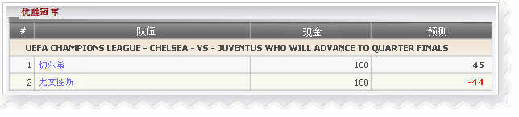

优胜冠军
定义:
查看代理人的赢金额根据占成数显示为余额和关于每个代理可能输预测显示，如果会员赢得投注金额。

优胜冠军
- 从上述的数字，让我们联赛欧洲冠军联赛 - 切尔西队-vs-尤文图斯谁将推动决赛作为一个例子来理解这个报告。
- 代理总余额根据占成数上可能赢得为切尔西和尤文图斯 = 100 + 100 = 200
- 1 切尔西: 会员金额= 200, 代理占成是 50%
--> 余额 = 金额* 代理占成 = 200 * 50% = 100
--> 预测 = 总余额-金额*赔率*代理占成 = 200 - 200 * 1.55 * 50% =
45
意思指代理会赢 45.
- 2 尤文图斯: 会员金额= 200, 代理占成是 50%
--> 余额 = 金额* 代理占成 =200*50%=100
--> 預測 = 總余額-金額*賠率*代理占成 = 200 - 200 * 2.44 * 50% =
-44
意思指代理会输 44.